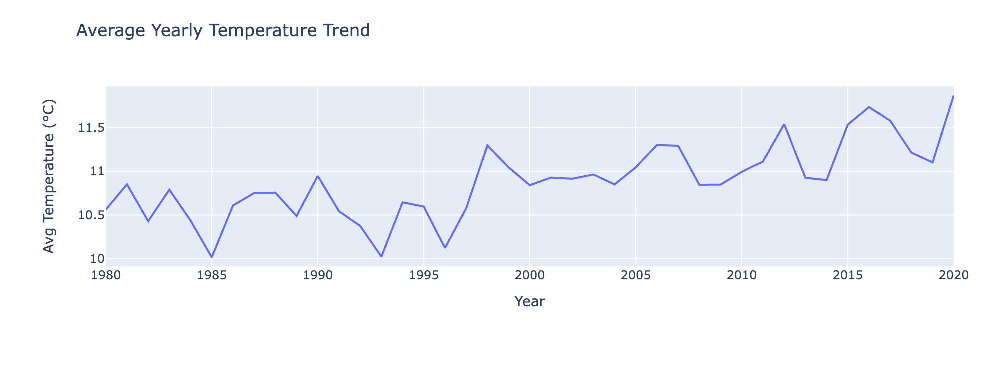
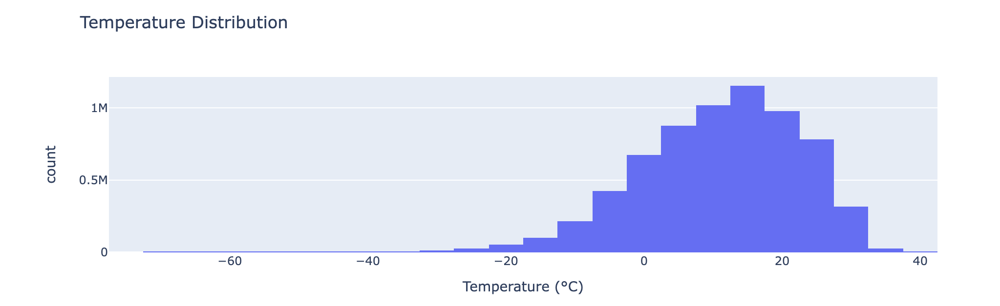

Overview
This blog post, intended for PIC 16A students, will provide a step-by-step explanation on how to analyze climate data using the NOAA dataset. This tutorial will go through the process of cleaning, transforming, and querying the data with the aim of indentifying trends in global temperatures across several coutnries and regions.
A preview of what this blog post will cover is the following: - Data Wrangling: Transforming the data into a suitable format. - SQL Queries: Writing efficient SQL queries to extract temperature data for a specific country. - Data Visualization: Creating interactive visualizations with Plotly to explore climate trends.
Step 1: Create a Database
Our first task will be to create a SQL database with three tables: temperatures, stations, and countries.
Import Libraries
First, import the following libraries.
import os
import pandas as pd
import numpy as np
import sqlite3
import urllib.requestDownload Data
To download the NOAA data, we create a folder named “datafiles to store the files if it does not already exist.
import os
# create folder named "datafiles" if it does not exist
if not os.path.exists("datafiles"):
os.mkdir("datafiles")The code below then downloads temperature data from NOAA. The data is in the form of decade-long intervals between 1901 and 2020. The code then generates the URL for each decade’s dataset. Finally, it saves the respective CSV file in the local datafiles.
# download the files
import urllib.request
intervals = [f"{i}-{i+9}" for i in range(1901, 2020, 10)]
for interval in intervals:
url = f"https://raw.githubusercontent.com/PIC16B-ucla/24F/main/datasets/noaa-ghcn/decades/{interval}.csv"
urllib.request.urlretrieve(url, f"datafiles/{interval}.csv")Connect to SQL
The following code creates (or connects to) a database named temps.db in the current directory. In the case that the database does not exist, SQLite will create it by default.
conn = sqlite3.connect("temps.db") # create a database in current directory called temps.dbReshaping the data
Now we will process each csv file one at a time, using the prepare_df function. Because the dataset is in wide format, the prepare_df(df) function melts it into a long format. The function ensures each row in the dataset represents a single month. Additionaly, it extracts month numbers and scales temperature values.
def prepare_df(df):
"""
prepares a piece of wide format dataframe into a long format data frame
"""
# melt to the long format table
df = df.melt(
id_vars = ["ID", "Year"],
value_vars = [f"VALUE{i}" for i in range(1, 13)],
var_name = "Month",
value_name = "Temp"
)
# cleaning month and temp
df["Month"] = df["Month"].str[5:].astype(int)
df["Temp"] = df["Temp"] / 100
# df = df[~np.isnan(df["Temp"])]
#Remove NaN temperature values
df = df.dropna(subset=["Temp"])
return dfLoading and Storing Temperature Data
This loop transforms and stores the NOAA temperature data for each decade. The code first loads each CSV file, applies the prepare_df function, and finally saves the cleaned data to the SQLite database. After executing this code, the temperature table will be complete.
intervals = [f"{i}-{i+9}" for i in range(1901, 2020, 10)]
for i, interval in enumerate(intervals):
filepath = f"datafiles/{interval}.csv"
df = pd.read_csv(filepath)
df = prepare_df(df)
df.to_sql("temperatures", conn, if_exists = "replace" if i == 0 else "append", index = False)Loading Stations Data
This code block similarily downloads station metadata from NOAA. It proceeds to load the data it into a pandas DataFrame and stores it in the SQLite database. This create the stations table.
filename = "https://raw.githubusercontent.com/PIC16B-ucla/25W/refs/heads/main/datasets/noaa-ghcn/station-metadata.csv"
stations = pd.read_csv(filename)
stations.to_sql("stations", conn, if_exists = "replace", index=False)Loading Countries Data
Now we repeat this same process for the countries data.
filename = "https://raw.githubusercontent.com/datasets/country-codes/master/data/country-codes.csv"
countries = pd.read_csv(filename)
countries.to_sql("countries", conn, if_exists = "replace", index=False)Final Check
Now we have a database containing all three of the specified tables. To check that this indeed the case, we will run the following code block:
cursor = conn.cursor()
cursor.execute("SELECT name FROM sqlite_master WHERE type='table'")
print(cursor.fetchall())If all the steps up to this point have been completed successfuly, your code will output the following:
[('temperatures',), ('stations',), ('countries',)]Close Database Connection
Run the following code to ensure the connection to the database is closed.
#Close the database connection
conn.close()Step 2: Writing a Query Function
In this part of the tutorial, we will be querying the database created in Part 1. To do this, we will write a query function that extracts temperature readings for a specified country, time range, and month.
Namely, in the climate_database.py file, write a function called query_climate_database() which accepts five arguments:
db_file: The file name for the databasecountry: A string giving the name of a country for which data should be returned.year_beginandyear_end: Two integers giving the earliest and latest years for which data should be returned (inclusive).
month: An integer giving the month of the year for which data should be returned.
Execute the code below to load the query_climate_database() function and show its content:
from climate_database import query_climate_database
import inspect
print(inspect.getsource(query_climate_database))Output
Once running the code, you should see the following output:
def query_climate_database(db_file, country, year_begin, year_end, month):
"""
Queries climate database. Retrns Pandas DataFrame with temperature readings
for a country, date range, and month.
Args:
db_file (str):SQLite database file
country (str):name of the country.
year_begin (int):earliest year for data returned.
year_end (int):latest year for data returned.
month (int):month data should be returned.
Returns:
pd.DataFrame:dataframe with columns [NAME, LATITUDE, LONGITUDE, Country, Year, Month, Temp].
"""
#connect to database
conn = sqlite3.connect(db_file)
#Query code
query = f"""
SELECT S.NAME AS NAME,
S.LATITUDE AS LATITUDE,
S.LONGITUDE AS LONGITUDE,
C."official_name_en" AS Country,
T.Year AS Year,
T.Month AS Month,
T.Temp AS Temp
FROM temperatures T
JOIN stations S ON T.ID = S.ID
JOIN countries C ON SUBSTR(S.ID, 1, 2) = C."ISO3166-1-Alpha-2"
WHERE C."official_name_en" = ?
AND T.Year BETWEEN ? AND ?
AND T.Month = ?
ORDER BY S.NAME ASC;
"""
#execute query and then fetch the results
df = pd.read_sql_query(query, conn, params=(country, year_begin, year_end, month))
#close connection
conn.close()
return dfVerification
To ensure the query function is implemented properly, run the following code and match it to the output below.
query_climate_database(db_file = "temps.db",
country = "India",
year_begin = 1980,
year_end = 2020,
month = 1)Step 3: Writing a Geographic Scatter Function for Yearly Temperature Increases
In this part of the tutorial, we will write a function to create visualizations that address the following question:
How does the average yearly change in temperature vary within a given country?
Specifically we will define the function temperature_coefficient_plot()
The code for the function is as follows:
def temperature_coefficient_plot(db_file, year_begin, year_end, month, min_obs=10, **kwargs):
"""
Generate interactive scatter plot of yearly temperature rises
"""
#Import necesry libraries
import pandas as pd
import numpy as np
import plotly.express as px
import sqlite3
#Load database into DataFrames
conn = sqlite3.connect(db_file)
df_temp = pd.read_sql_query("SELECT * FROM temperatures", conn)
df_stations = pd.read_sql_query("SELECT * FROM stations", conn)
conn.close()
#merge on "ID"
df = df_temp.merge(df_stations, on="ID")
#filter data
df = df[
(df["Month"] == month) &
(df["Year"] >= year_begin) &
(df["Year"] <= year_end)]
#Handle empty data case
if df.empty:
raise ValueError("No data found for the specified parameters.")
#get yearly temp trend slope for given station
def compute_slope(group):
if len(group) < min_obs:
return np.nan #ignore stations lacking data
slope, _ = np.polyfit(group["Year"], group["Temp"], 1)
return slope
#group by station
trends = df.groupby(["NAME", "LATITUDE", "LONGITUDE"]).apply(compute_slope).reset_index()
trends.columns = ["NAME", "LATITUDE", "LONGITUDE", "Temp_Trend"]
#remove lacking stations
trends = trends.dropna()
#Make plot w/ Plotly
fig = px.scatter_mapbox(
trends,
lat="LATITUDE",
lon="LONGITUDE",
color="Temp_Trend",
hover_name="NAME",
title=f"Estimates of Yearly Temperature Increase ({year_begin}-{year_end})",
color_continuous_scale=px.colors.diverging.RdGy_r,
center={"lat": trends["LATITUDE"].mean(), "lon": trends["LONGITUDE"].mean()},
zoom=2,
**kwargs
)
# style plot
fig.update_layout(mapbox_style="carto-positron")
return figTo ensure the funciton was implemented properly, run the following test case to ensure the output matches:
# assumes you have imported necessary packages
color_map = px.colors.diverging.RdGy_r # choose a colormap
fig = temperature_coefficient_plot("India", 1980, 2020, 1,
min_obs = 10,
zoom = 2,
mapbox_style="carto-positron",
color_continuous_scale=color_map)
fig.show()Creating Two Additional Figures
Now, we will create at least one more SQL query function in climate_database.py and at least two more complex and interesting interactive data visualizations using the same data set.
Line Plot of Yearly Average Temperature
We will make a line plot that shows how the average temperature changes over time.
import plotly.express as px
def plot_yearly_temperature_trend(db_file, year_begin, year_end):
"""
line plot of avg temperature per year
"""
df = query_temperature_data(db_file, year_begin, year_end)
#yearly avg temp
yearly_avg = df.groupby("Year")["Temp"].mean().reset_index()
#line plot
fig = px.line(yearly_avg, x="Year", y="Temp",
title="Average Yearly Temperature Trend",
labels={"Temp": "Avg Temperature (°C)", "Year": "Year"})
return figTo test the function, run the code below:
ig1 = plot_yearly_temperature_trend("temps.db", 1980, 2020)
fig1
Histogram of Temperature Distribution
Now, we will make a histogram that shows the distribution of temperatures across all years.
def plot_temperature_distribution(db_file, year_begin, year_end, month=None):
"""
histogram of temp distribution over years
"""
df = query_temperature_data(db_file, year_begin, year_end, month)
#generate histogram
fig = px.histogram(df, x="Temp", nbins=30,
title="Temperature Distribution",
labels={"Temp": "Temperature (°C)"},
color_discrete_sequence=["#636EFA"])
return figRun this code to test output:
fig2 = plot_temperature_distribution("temps.db", 1980, 2020)
fig2.write_html("temperature_distribution.html")
fig2